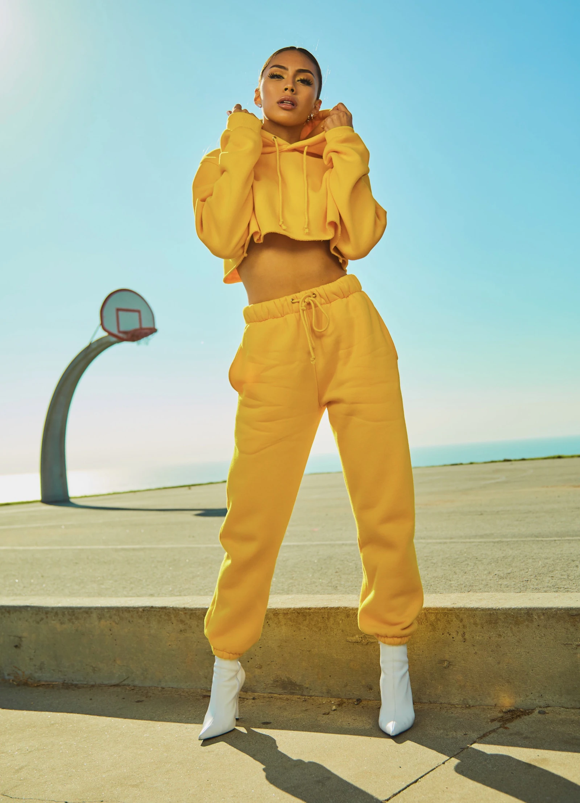

Threshold
A calm opening where silhouette meets chromatic density.
Lookbook
Large-scale fashion imagery designed to immerse viewers before product decision.
Volume 01
A calm opening where silhouette meets chromatic density.

Color gradients shift with body movement and light.

Garment as visual language and personal signature.